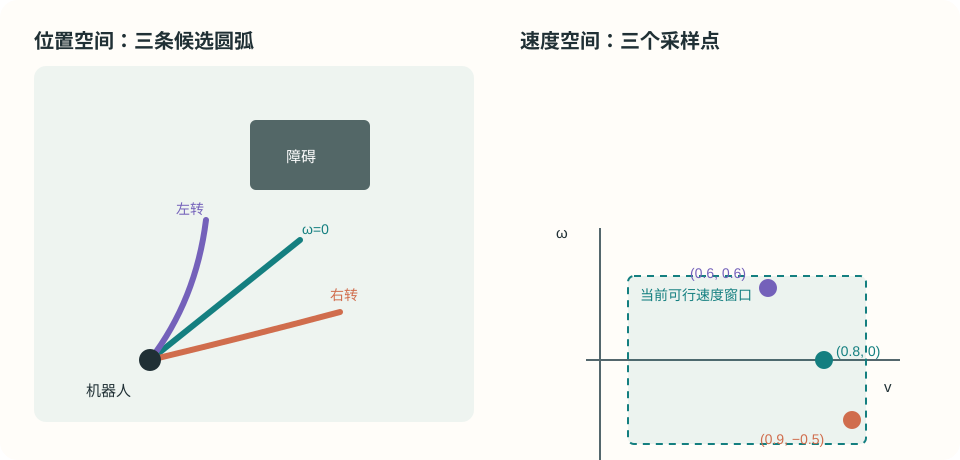
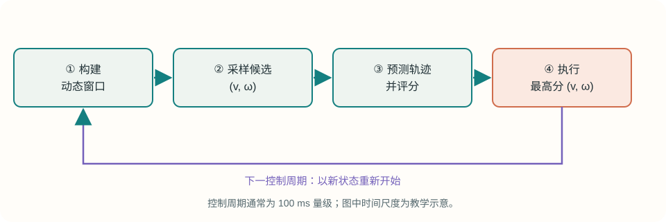

动态窗口法 DWA：在速度空间里实时避障
全局路径只给出“怎么绕开已知障碍”，但当行人突然出现时，机器人需要的是一秒钟几十次的局部决策。DWA 把选择从位置空间搬到速度空间，用一台机器在当下真正能执行的速度窗口里挑选下一段圆弧。
全局路径之外：为什么还需要一层局部规划
假设 A* 已经在栅格地图上算好了从起点到终点的路线。这条路线对建图时已知的静态障碍是安全的最优解，但它有两个隐含假设：地图不再变化，而且机器人能瞬时精确地沿着折线运动。
真实场景会同时打破这两点。一个行人可能走进走廊；地面摩擦和电机延迟让“立刻转向”做不到；机器人也无法贴着墙精确地走过每一个折点。如果只依赖全局重规划，通常要几百毫秒才能给出新路径，而此刻碰撞可能已经发生。
DWA 的思路不是再算一条完整路径，而是只决定下一小段时间该怎么动：在当前位置，从机器人当下物理上能做到的速度里挑一个，让未来一小段轨迹既朝目标靠近、又远离障碍。这个决定每个控制周期重复一次，遇到新障碍就能在下个周期改变动作。
关键区分：全局规划回答“走哪条路”，输出一条几何路径；DWA 回答“这一瞬间往哪开”，输出一个速度指令 (v, ω)。前者离线或低频，后者在线且高频。
换一个坐标轴：在速度空间里搜索
对差速驱动机器人，控制量只有两个：线速度 v（前进为正）和角速度 ω。若在接下来的一小段时间里保持常量，机器人走得就是一段圆弧（ω=0 时退化为直线）。因此“选一个动作”等价于“选一个平面上的点 (v, ω)”，不同的点对应不同的圆弧。
这个以 v 为横轴、ω 为纵轴的平面叫速度空间。DWA 不在位置空间里比较“哪个下一个栅格好”，而是在这个平面里采样、模拟、打分。好处是把机器人的动力约束直接变成几何边界：哪些点能选，是由加速度限制和刹车距离画出来的。
DWA · 16

动态窗口：三重约束的交集
DWA 不会拿整张速度平面去比。当前时刻真正能选的速度，只需三组约束的交集，这也是 Fox、Burgard 与 Thrun 在 1997 年原文里的核心构造：
- 速度边界
V_s：硬件本身的极限速度范围。 - 动力学窗口
V_d：在一个控制周期Δt内，受最大加速度限制、从当前速度(v_c, ω_c)能到达的速度。它随当前速度滑动，这就是“动态”二字的来源。 - 可行速度
V_a：若按此速度继续走，机器人能在撞上障碍前完全刹停的速度，由刹车距离条件定义。
需要提醒的是，公式 (3) 里的距离 dist(v, ω) 是沿这条候选轨迹测的，不是到目标或到全局路径的距离。因此在实现中，必须是先预测轨迹、再查障碍、再回填可行窗口；这个顺序不能颠倒。
DWA · 16

V_a。这也是为什么“没立刻撞上”不等于“安全”。预测、评分、执行：一个周期的三步
在每个控制周期，DWA 把动态窗口离散成一组候选 (v, ω)，然后对每个候选做同一件事：向前模拟一段时间 T 的轨迹，打分，最后把得分最高的速度作为本周期指令。下一周期从新状态开始重复。
DWA · 16

评分函数把三个目标加权求和（α、β、γ 为权重）：
| 分量 | 衡量什么 | 权重偏低 | 权重偏高 |
|---|---|---|---|
heading | 轨迹末端朝向与目标方向的夹角 | 偏离目标、犹豫 | 贪近路、贴近障碍 |
dist | 轨迹与最近障碍的最小距离 | 避障迟纯 | 过度保守、不敢过窄口 |
velocity | 当前线速度大小 | 行动缓慢 | 转弯不减速 |
原文强调一个实现细节：三个分量量纲不同（夹角是弧度，距离是米，速度是米/秒），必须先归一化再加权，否则权重的意义会被量纲主导。常见做法是在本次采样的所有候选里把每项缩放到 [0, 1]（例如除以本周期该项最大值）。下面代码演示了这一点。
交互：三个候选速度的对照
下面小图固定了机器人、目标和一块矩形障碍。三个按钮对应动态窗口里三个候选 (v, ω) 及其预测圆弧。切换看看每个候选为什么会得到不同的评分——注意陶红那条会撞上障碍，在真实实现里应当在评分前就被可行窗口剪掉。
候选 1：朝向一般，但远离障碍，综合安全。
三个候选的得分比较为教学示意；真实参数、权重与障碍几何以正文 Python 中的精确示例为准。
可运行的最小 DWA（Python 3.10+）
下面用标准库实现一个确定性的差速机器人 DWA。假设：机器人是个点，障碍是已知的固定点；速度在周期内保持常量，因此轨迹是圆弧。这段代码只演示“动态窗口 + 刹车可行 + 归一化评分”的骨架，不是机器人级规划器。
第一部分定义运动模型、动态窗口、轨迹预测与障碍间距：
import math # Python 3.10+
MAX_V, MIN_V = 1.0, 0.0 # 线速度上下限 (m/s)
MAX_W = 1.0 # 角速度上限 (rad/s)
MAX_ACC, MAX_ALPHA = 0.5, 1.0 # 线/角加速度上限
DT, T = 0.1, 1.0 # 控制周期与预测时长 (s)
BRAKE = 0.5 # 最大刹车减速度 (m/s^2)
def dynamic_window(vc, wc):
"""V_d ∩ V_s：一个周期内可达且不超硬件限的速度。"""
vlo = max(MIN_V, vc - MAX_ACC * DT)
vhi = min(MAX_V, vc + MAX_ACC * DT)
wlo = max(-MAX_W, wc - MAX_ALPHA * DT)
whi = min(MAX_W, wc + MAX_ALPHA * DT)
return vlo, vhi, wlo, whi
def rollout(v, w):
"""在周期内保持 (v, w) 常量，向前积分出圆弧轨迹。"""
x = y = th = 0.0
pts = []
for _ in range(int(T / DT)):
x += v * math.cos(th) * DT
y += v * math.sin(th) * DT
th += w * DT
pts.append((x, y))
return pts
def clearance(pts, obstacles):
"""轨迹到最近障碍的最小距离。"""
return min( math.hypot(px - ox, py - oy)
for px, py in pts for ox, oy in obstacles )
第二部分给出可行速度条件、归一化评分与搜索主循环，并用断言验证。样例输入：当前位置速度 (v_c, ω_c) = (0.5, 0.0)，目标 (2.0, 0.0)，障碍点 (0.6, 0.3)。运行 python3 dwa_demo.py 应当不报错（断言通过），并打印选中的速度。
def admissible(v, pts, obstacles):
"""V_a：v ≤ sqrt(2·dist·brake) 时才能在撞上前停住。"""
return v <= math.sqrt(2 * BRAKE * clearance(pts, obstacles))
def plan(vc, wc, goal, obstacles):
vlo, vhi, wlo, whi = dynamic_window(vc, wc)
cands = []
v = vlo
while v <= vhi + 1e-9:
w = wlo
while w <= whi + 1e-9:
pts = rollout(v, w)
if admissible(v, pts, obstacles):
cands.append((v, w, pts))
w += 0.05
v += 0.05
def raw(v, w, pts):
ex, ey = pts[-1]
heading = max(0.0, math.pi - abs(math.atan2(goal[1]-ey, goal[0]-ex)))
return heading, clearance(pts, obstacles), v
# 逐项归一化到 [0, 1] 再加权，避免量纲主导评分。
hmax = max(raw(v, w, p)[0] for v, w, p in cands) or 1.0
dmax = max(raw(v, w, p)[1] for v, w, p in cands) or 1.0
vmax = max(raw(v, w, p)[2] for v, w, p in cands) or 1.0
def score(v, w, pts):
h, d, sp = raw(v, w, pts)
return 0.8*h/hmax + 0.15*d/dmax + 0.05*sp/vmax
return max(cands, key=lambda c: score(*c))
v, w, pts = plan(0.5, 0.0, (2.0, 0.0), [(0.6, 0.3)])
assert w < 0.0, "障碍偏在路径左侧，应右转微让以保持间距"
assert 0.0 < v <= 0.55, "速度不得超过动态窗口上界"
print(f"selected v={v:.2f} m/s, w={w:.2f} rad/s")
# => selected v=0.45 m/s, w=-0.10 rad/s
打印结果是可用上述输入复现的确定值：目标在正前方，但障碍点偏在上方（左前方），因此 clearance 项让右转候选得分略高；速度则取窗口上界附近仍可行的最大值。
边界条件与常见误用
DWA 的简洁有代价。以下几点最容易在实现和论证时出错：
- 局部最优：DWA 只看预测窗口 T 内、动态窗口中的候选，本质是贪心。面对 U 形障碍或死胡同，它可能反复徘徊而不前进。原文定位就是局部避障方法，需要全局规划器提供引导。
- 提前剪枝，而非事后惩罚：不可行（会撞）的候选应在进入评分前就被
V_a剔除。若只靠加大 clearance 权重来“惩罚”，仍可能出现评分最高者本身不可行的情形。 - 归一化不能省：heading、dist、velocity 量纲不同。不归一化就等于让米数或弧度数默默决定权重。
- 轨迹假设：预测阶段假设周期内
(v, ω)不变；周期越长或转速越高，圆弧模型与真实运动偏差越大。预测窗口 T 越大计算量越高。 - 不是全局最优求解器：较新的实现（如 Nav2 的 DWB、MPPI）在轨迹生成、采样与代价结构上都有差异，不能拿 DWA 的单周期选择当作路径最优性证明。
在轮式机器上，输出的是速度指令而不是路径。它是否真正安全，还取决于底层控制器能否准确执行该速度，以及感知到的障碍位置是否可信。
来源与实现参照
- Fox, Burgard & Thrun (1997), The Dynamic Window Approach to Collision Avoidance, IEEE Robotics & Automation Magazine 4(1)——动态窗口、可行速度与评分函数的原始定义。
- ROS
dwa_local_planner（ROS 1 导航栈）——工程参数与轨迹评分的参考实现。 - ROS 2 Nav2 官方文档——比较现代局部控制器（DWB、MPPI）与本地窗口的差别。
- LaValle, Planning Algorithms——局部规划与反馈式控制的背景章节。